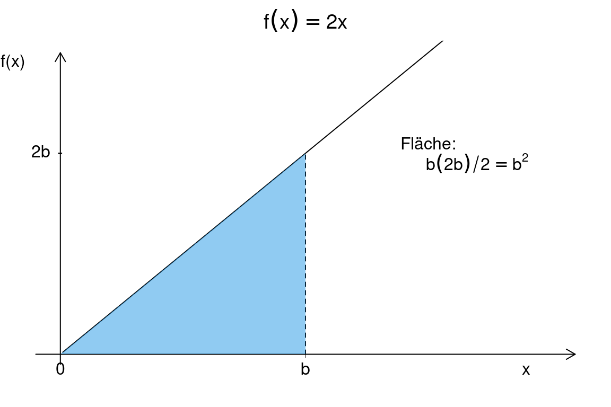

Kapitel 7 Integralrechnung
Wir befassen uns im Folgenden mit der Fragestellung, ob und wie von einer gegebenen Ableitungsfunktion \(f' (x)\) die zugrunde liegende Funktion \(f (x)\) hergeleitet werden kann.
Dieser Prozess – die Bestimmung des (unbestimmten) Integrals – ist die Umkehrung des Differenzierens.
Eine Anwendung der Integralrechnung ist die Bestimmung von Flächeninhalten unterhalb eines Funktionsgraphen.
Weitere Anwendungen in den Wirtschaftswissenschaften ergeben sich beispielsweise aus der Betrachtung von Grenzkosten und Gesamtkosten.
Beispiel 7.1 (Grenzkostenfunktion) Ein Unternehmen produziert ein Gut mit folgender Grenzkostenfunktion \(C'\) :
\[C' (x) = 0,3x^ 2 − 4x + 21.\]
Wie kann das Unternehmen daraus die Gesamtkostenfunktion \(C\) ermitteln?
Gesucht ist also eine Funktion \(C\) derart, dass ihre Ableitung \(C'\) ist.
Man überprüft leicht, dass die Funktion
\[C(x) = 0,1x^ 3 − 2x^ 2 + 21x\]
diese Anforderung erfüllt.
Beachte, dass auch jede andere Funktion der Form
\(C(x) = 0,1x^ 3 − 2x^ 2 + 21x + c\), wobei \(c\) eine Konstante (eine feste Zahl) darstellt,
(hier \(c\) = Fixkosten) die Bedingung erfüllt.7.1 Das unbestimmte Integral
Für die Funktion \(f (x) = x^2\) wissen wir bereits, dass \(f' (x) = 2x\) gilt.
Ist umgekehrt bekannt, dass \(f' (x) = 2x\), so ist zwar klar, dass \(f (x) = x^ 2\) eine Funktion mit dieser Ableitung ist.
Jede andere Funktion der Form \(f (x) = x^ 2 + c\) mit \(c\) konstant, hat jedoch dieselbe Ableitung!
Ausgehend von einer Ableitung kann die Funktion selbst also nicht eindeutig bestimmt werden, sondern nur bis auf eine (unbekannte) Konstante.
Der Umkehrprozess der Differentiation wird Integration oder Integrieren genannt.
Im Beispiel erhält man aus der Grenzkostenfunktion \(C'\) durch Integrieren die Kostenfunktion (bis auf die Fixkosten).
Definition 7.1 (Stammfunktion) Es sei \(f\) eine stetige Funktion im Intervall \([a,b]\). Eine differenzierbare Funktion \(F\) in \([a,b]\) heißt Stammfunktion zu \(f\) , falls gilt: \(F' (x) = f (x)\) bzw. \(dF / dx = f (x)\).
Beispiel 7.2 (Einige Stammfunktionen)
Stammfunktionen von \(f (x) = x\) sind etwa \(F(x)= \frac{1}{2}x^2\) und \(F(x)= \frac{1}{2}x^2 +7\).
Stammfunktion von \(f (x) = 1/x\) , \(x > 0\), ist \(F(x) = ln x + c\) (\(c\): konstant), denn \(F' (x) = 1/x\) .
Definition 7.2 (Unbestimmtes Integral) Die Menge aller Stammfunktionen zu f wird unbestimmtes Integral genannt und mit \(\int f (x) dx\) bezeichnet. Die Funktion \(f (x)\) heißt Integrand.
Beispiel 7.2 (Einige Integrale)
- \(\int 4x^ 3 dx = x^ 4 + c\)
- \(\int 7t^ 6 dt = t^ 7 + c\)
- \(\int e^ z dz = e^ z + c\).
Die folgenden Sätze helfen unbestimmte Integrale zu finden.
Theorem 7.1 (Grundintegrale) Es seien: \(g\) stetige Funktion; \(n\), \(c\), \(a\), \(b\) reelle Konstanten. \[\begin{equation*} \def\arraystretch{1.9} \begin{array}[t]{l|llll} \hline & \text{Funktion } f(x) & \int f(x)\, \text{d} x & Bemerkung\\\hline\hline 1& x^n & \displaystyle \frac{x^{n+1}}{n+1} + c & n\not=-1\\\hline 2& (ax + b)^n & \displaystyle \frac{1}{a} \cdot \frac{(ax + b)^{n+1}} {n+1} + c\\\hline 3& \displaystyle \frac{1}{x} & \ln |x| + c\\\hline 4& \displaystyle\frac{1} {ax +b} & \displaystyle \frac{1}{a} \ln |ax+b| + c & a\not=0\\\hline \end{array} \end{equation*}\]
\[\begin{equation*} \def\arraystretch{1.9} \begin{array}[t]{l|llll} \hline% & \text{Funktion } f(x) & \int f(x)\, \text{d} x & Bemerkung\\\hline\hline 5& \displaystyle\frac{g^\prime(x)}{g(x)} & \ln |g(x)| + c\\\hline 6& \text{e}^x & \text{e}^x + c\\\hline 7& \text{e}^{ax+b} & \frac{1}{a} \text{e}^{ax+b} + c & a\not=0\\\hline 8& g^\prime(x) \text{e}^{g(x)} & \text{e}^{g(x)} + c\\\hline 9& g(x)\cdot g^\prime(x)& \tfrac{1}{2}(g(x))^2 + c\\\hline \end{array} \end{equation*}\]
Beispiel 7.3 (Anwendung der Regel)
\(\int dx = \int 1 \cdot dx = \int x^0 \cdot dx = x + c\) (Regel 1 mit \(n = 0\))
\(\int \sqrt{y} \ dy= \int {y}^{1/2} dy= \color{blue}{\frac{2}{3}} {y}^{\color{red}{3/2}}+c\) (Regel 1 mit \(n=\frac 12\) folglich \(n+1=\color{red}{\frac{3}{2}}\) und \(\frac 1{n+1} = \color{blue}{\frac{2}{3}}\))
\(\int (\color{red}{3}z-2)^2 \ dz = \frac{1}{\color{red}{3}} \frac{(3z-2)^\color{blue}{3}}{\color{blue}{3}}+c = \frac 19 (3z-2)^3+c\) (Regel 2 mit \(a=\color{red}{3}\) und \(n=2\) folglich \(n+1=\color{blue}{3}\))
\(\int \frac 1{\color{blue}{2}x-5}\ dx = \frac 1{\color{blue}{2}}\ln|\color{blue}{2}x-5|+c\) (Regel 4 mit \(a=\color{blue}{2}\))
\(\int \frac {\color{red}{x}}{\color{blue}{0.5x^2-1}}\ dx = \ln|\color{blue}{0.5x^2-1}|+c\) (Regel 5 mit \(g(x)=\color{blue}{0.5x^2-1}\) folglich \(g'(x) = \color{red}{x}\))
\(\int e ^{\color{red}{0,5}t-7} \ dt = \color{blue}{2} \cdot e^{\color{red}{0,5}t-7}+c\) (Regel 7 mit \(a=\color{red}{0,5}\) folglich \(\frac 1a = \color{blue}{2}\))
\(\int \color{red}{4x}\cdot e ^{\color{blue}{2x^2}} \ dt = e^{\color{blue}{2x^2}}+c\) (Regel 8 mit \(g(x)={\color{blue}{2x^2}}\) folglich \(g'(x)={\color{red}{4x}}\))
\(\int 9\cdot\color{red}{(3x-2)} \ dx = \int 3\cdot 3\cdot\color{red}{(3x-2)} \ dx =3\cdot\int \color{blue}{3}\cdot\color{red}{(3x-2)} \ dx = 3\cdot \frac 12\color{red}{(3x-2)}^2\) (Regel 9 mit \(g(x)=\color{red}{(3x-2)}\) und daher \(g'(x) = \color{blue}{3}\))
Im letzen Beispiel haben wir bereits die Rechenregel: \(\int \color{green}{3}\cdot\ldots = \color{green}{3}\cdot\int\ldots\) benutzt. Dieser und noch eine weitere Summenregel werden im nächsten Satz formuliert.
Theorem 7.2 (Rechenregel für Integrale) Es seien \(f\) und \(g\) stetige Funktionen und \(k\) eine Konstante. Dann gilt:
\(\int k \cdot f (x) dx = k \cdot \int f (x) dx\)
\(\int (f (x) + g(x)) dx =\int f (x) dx + \int g(x) dx\)
Beispiel 7.4 (Anwendung der Regeln und des Theorems 7.2)
\(\int dx = \int \underbrace{12x}_{3\cdot4x}\cdot e^{2x^2+1} \cdot dx \stackrel{Thm.7.2 i}{=} 3\cdot{\color{red}{\int 4x\cdot e^{2x^2+1} \cdot dx}} = 3\cdot\color{red}{e^{2x^2+1} }+ c\) (Regel 8 mit \(g(x) = 2x^2+1\) und \(g^\prime(x)=4x\)).
\(\int \big(\underbrace{\frac2{3x+4}}_{\frac{2\cdot 1}{3x+4}} + e^x\big)dx\stackrel{Thm.7.2 i ,ii}{=} 2\cdot\color{red}{\int \frac1{3x+4}dx} + \color{green}{\int e^xdx}= 2\cdot\color{red}{\frac13\ln|3x+4|} + \color{green}{e^x} + c\) (Regel 4 mit \(a=3\))
Wenden Sie die oberen Rechenregel in den folgenden Aufgaben an.
Aufgabe 7.1 (Rechenregel für Integrale) Bestimmen Sie:
- \(\int \ 6x^2 dx\)
Antwort
\(= 6 \cdot \int x^2dx= 6 \cdot \frac{x^{2+1}}{2+1} +c= 6 \cdot (x^3/3) + c= 2x^3+c\) (Regel 1)
(ii) \(\int \frac{-1}{x} dx\)
Antwort
\(= -1 \int \frac{1}{x} dx = -1 \cdot ln (x) + c = - ln(x) + c\) (Regel 3)
(iii) \(\int (8x^3 − 4x + 2) dx\)
Antwort
\(= \int 8x^3dx + \int -4xdx + \int 2dx = 8 \cdot \int x^3dx + (-4) \cdot \int xdx + 2 \cdot \int 1dx\) \(= 8 (x^4/4)-4 (x^2/2+2x+c = 2x^4 - 2x^2+2x+c\) (Regel 1)
(iv) \(\int x^{3/2} dx\)
Antwort
\(= \frac{x ^{\frac{3}{2}+1 }}{ \frac{3}{2}+1 } +c = \frac{x^ \frac{5}{2} }{ \frac{5}{2} } +c = \frac{2}{5} x ^ {\frac{5}{2}}+c\) (Regel 2)
(v) \(\int 6x \cdot \ e^{x^2} dx\)
Antwort
\(= \int 3 \cdot 2x \cdot e^{x^2} dx = 3 \cdot \int 2x \cdot e^{x^2} dx = 3 \cdot e^{x^2} +c\) (Regel 8)
(vi) \(\int \frac{3x^2+2}{x^3+2x} dx\)
Antwort
\(= \ln (x^3+2x)+c\) (Regel 5)Die im Allgemeinen unbekannte Integrationskonstante \(c\) kann man mit Hilfe zusätzlicher Information, wie der Funktionswert in einem Punkt, ausrechnen.
Beispiel 7.5 (Berechnung der Integrationskonstante) Kennt man in der oberen Aufgabe \((i)\) zusätzlich den Wert der Stammfunktion in einem Punkt, kann man dies nutzen um den Wert für die Integrationskonstante zu berechnen. Bspw. wird der Wert \(10\) in \(x=1\) angenommen \((F(1)=10).\) Dann, aus \(F(1)=10\) und \(F(x)= 2x^3 + c\), rechnet man:
\[F(1)=2\cdot 1^3 + c = 10\rightarrow c = \color{red}{8}.\]
(Wir haben \(x=1\) in den Ausdruck für \(F(x)\) eingesetzt und nach \(c\) umgestellt.)
Also lautet die Stammfunktion: \(F(x) = 2x^3 + \color{red}{8}.\)
Aufgabe 7.2 (Berechnen von Integrationskonstante) Bestimmen Sie das Integral und die Integrationskonstante \(c\):
- \(F(x) = \int x^{1/2} dx\), \(F(0) = 5\)
Antwort
\(=\frac{x^{(1/2+1)}}{1/2+1} +c = \frac{x^{(3/2)}}{3/2} + c = \frac{2}{3} x^{(3/2)}+c = F(x)\)
bekannt: \(F(0)=5\), d.h. \((2/3) \cdot 0^{(3/2)} +c =5 \Rightarrow \ c=5\)
\(\rightarrow F(x)=2/3x^{3/2}+5.\)
(ii) \(F(x) = \int (2x^3 + 4x) dx\), \(F(0) = 0\)
Antwort
\(= \int 2x^3dx + \int 4x dx = 2 \cdot \int x^3dx +4 \cdot \int x dx=2 \cdot x^4/4+4 \cdot x^2/2+c=x^4/2+2x^2+c\)
bekannt: \(F(0)=0\), d.h. \(0^4/2+2 \cdot 0^2 +c=0 \Rightarrow c=0\)
\(\rightarrow F(x)=(x^4)/2+2x^2\)
Aufgabe 7.3 (Gesamtkosten und Stückkosten) Ein Unternehmen produziert mit folgender Grenzkostenfunktion:
\[C' (x) = 1,5x^2 − 4x + 4.\]
Bei einem Output von \(10\) Mengeneinheiten betragen die Gesamtkosten \(372\) Geldeinheiten.
Ermitteln Sie die Gesamtkostenfunktion \(C(x)\) und die Stückkostenfunktion \(\frac{C(x)}{x}\).Antwort
Gesamtkostenfunktion: finde die Stammfunktion von \(C'(x)\):
\[\begin{align}C(x) &= \int C'(x) dx =\int (1,5x^2-4x+4) \ dx \\ &=\int 1,5x^2 \ dx + \int (-4)x\ dx+ \int 4\ dx \\ &=1,5 \int x^2 \ dx + (-4) \int x \ dx+ 4\int 1\ dx \\ &=1,5 \frac{x^3}{3} + (-4) \frac{x^2}{2} + 4x +c. \end{align}\]
Die Integrationskonstante \(c\) wird noch gesucht.
Zusätzlich gegeben: \[C(\color{blue}{10})=\color{red}{372},\] d.h. \[C(\color{blue}{10}) = 0,5 \cdot \color{blue}{10}^3 - 2 \cdot \color{blue}{10}^2 + 4 \cdot \color{blue}{10} + c = \color{red}{372}.\]
Folglich: \(c=372-340=\color{green}{32}.\)
Gesamtkostenfunktion: \[C(x) = 0,5x^3-2x^2+4x+\color{green}{32},\]
Stückkostenfunktion: \[\frac{C(x)}{x} =0,5x^2-2x+4+ \frac{32}{x}. \]
7.2 Das bestimmte Integral
In der Aufgabe 7.3 haben wir die Gesamtkostenfunktion bestimmt. Was aber wenn wir bloss die Veränderung der Kosten erfahren möchten, wenn sich die Produktion \(x\) von \(100\) auf \(150\) verändert? Wie wir gleich sehen werden, entspricht die Kostenveränderung der Fläche unter der Grenzkostenfunktion \(C'(x)\). Hier helfen uns bestimmte Integrale weiter.
Es sei \(f\) eine stetige und positive Funktion.
Das bestimmte Integral, auch Riemann-Integral, ist definiert als die Fläche auf einem Intervallstück zwischen der \(x\)-Achse und dem Funktionsgraphen von \(f\) .
Man betrachte beispielsweise die Funktion \(f (x) = 2x\) auf dem Intervall \([0,1]\). Klar ist: Die Fläche unterhalb von \(f\) ist \(1\) (Höhe mal Breite des Rechtecks geteilt durch \(2\)).

- Die Integralrechnung bietet den mathematischen Apparat, den Flächeninhalt auch für nicht-lineare Funktionen zu bestimmen.
Theorem 7.3 (Hauptsatz der Integralrechnung) Die Funktion \(f\) sei stetig auf dem Intervall \([a,b]\) und es sei \(F\) eine Stammfunktion (unbestimmtes Integral) von \(f\) . Dann gilt: \[\int_{a}^{b} f(x)dx=F(b)-F(a).\]
Für den Ausdruck \(F(b) − F(a)\) wird auch die Notation \([F(x)]_a ^b\) verwendet.
Die Integrationskonstante kann ignoriert werden, da sie sich rauskürzt: \((F(b) + c) − (F(a) + c) = F(b) − F(a)\).
In Praxis bestimmt man also die Stammfunktion, setzt die Intervallgrenzen \(a\) und \(b\) ein und evaluiert die Differenz \(F(b) − F(a)\).
Beispiel 7.6 (Bestimmtes Integral) Im Beispiel \(f (x) = 2x\) auf dem Intervall \([0,1]\) ergibt sich:
\[\int_{0}^{1} 2xdx = F(1)-F(0)= \left[ x^2 \right]_0^1 = 1^2 - 0^2 = 1.\]
Etwas allgemeiner:
\[\int_{0}^{b} 2x \ dx = \left[ x^2 \right]_0^b = b^2.\]

Beispiel 7.7 (Bestimmtes Integral)
Es sei \(f (x) = x^3 + xe^{x^2}\).
Die Stammfunktion ist \(F(x)= \frac14x^4 + \frac 12 \cdot e^{x^2}\).
Wie man die Stammfunktion kalkuliert.
Wir benutzen die Sätze 7.1 und 7.2:
\[\begin{align} \int (x^3 + xe^{x^2})\ dx &\stackrel{Thm. 7.2 (ii)}{=} \int x^3 \ dx + \int \frac 12 \cdot 2\cdot xe^{x^2}\ dx \\ &\stackrel{Thm. 7.2 (i)}{=} \int x^3 \ dx + \frac 12\int \color{blue}{2x}e^{\color{red}{x^2}}\ dx\\ &\stackrel{Thm. 7.1 (1), (8)}{=} \frac{x^4}{4} + \frac 12e^{\color{red}{x^2}}. \end{align}\]
Bemerkungen:
- In der ersten Zeile haben wir im zweiten Integral \(\frac 12\cdot 2\) hinzugefügt, damit später das Grundintegral Nummer 8 aus dem Theorem 7.1 angewandt werden kann. Da \(\frac 12\cdot 2\) ergibt \(1\) und Multiplikation mit \(1\) verändert nichts, dürfen wir diesen “Trick” hier anwenden.
- Inder letzen Zeile (zweiter Summand) haben wir das Grundintegral Nummer 8 aus dem Theorem 7.1 angewandt mit \(g(x)=\color{red}{x^2}\) und daher \(g'(x)=\color{blue}{2x}.\)
Die Fläche auf \([0,5;1]\) ist:
\[\begin{align}\int_{1}^{2} x^3 + xe^{x^2}dx &= \left[ \frac14x^4 + \frac 12 \cdot e^{x^2} \right] _{1}^2\\ &= \frac14 \cdot 2^4 + \frac 12 \cdot e^{2^2}- \frac14 \cdot 1^4 - \frac 12 \cdot e^{1^2} \\ &= 29.69. \end{align}\]

Aufgabe 7.4 (Bestimmte Integrale berechnen) Bestimmen Sie:
- \(\int_{0}^{1} (4x^4+2x^3+4x+10) dx\)
Antwort
\[\begin{align} &= \int_{0}^{1} x^4dx + \int_{0}^{1} 2x^3dx + \int_{0}^{1} 4xdx + \int_{0}^{1} 10dx= \\ &=\int_{0}^{1} x^4dx + 2 \cdot \int_{0}^{1} x^3dx + 4 \cdot \int_{0}^{1} xdx + 10 \cdot \int_{0}^{1} 1 \ \cdot dx= \\ &=\left[ \frac{x^5}{5} \right]_0^1 + 2 \cdot \left[ \frac{x^4}{4} \right]_0^1 + 4 \cdot \left[ \frac{x^2}{2} \right]_0^1 + 10 \cdot \left[ x \right]_0^1 = \\ &=\frac{1^5}{5} + 2 \cdot \frac{1^4}{4} +4 \cdot \frac{1^2}{2} + 10 \cdot 1 - ( \frac{0^5}{5} + 2 \cdot \frac{0^4}{4} + 4 \cdot \frac{0^2}{2} + 10 \cdot 0)= \\ &= \frac{1}{5}+ \frac{1}{2}+2+10=12,7. \end{align}\]
(ii) \(\int_{0}^{8} {x}^{2/3} dx\)
Antwort
\[\begin{align} &= \left[ \frac{x^{2/3+1}}{ \frac{2}{3}+1 } \right]_0^8 = \left[ \frac{x^{5/3}}{ \frac{5}{3} } \right]_0^8 = \left[ \frac{3}{5} \cdot x^{5/3} \right]_0^8 \\ &= \frac{3}{5} \cdot 8^{5/3} - \frac{3}{5} \cdot \sqrt[3]{8^5} =19,2. \end{align}\]
(iii) \(\int_{1}^{2} 6x \cdot e^{x^2} dx\).
Antwort
\(= \left[ 3 \cdot e^{x^2} + c \right]_1^2 = 3 \cdot e^{2^2} - 3 \cdot e^{1^2} = 3 (e^4-e)= 155,6392\)7.2.1 Eigenschaften und elementare Rechenregeln
Folgende Eingeschaften erleichten das Rechnen mit Integralen.
Theorem 7.4 (Eigenschaften von bestimmten Integralen I) Es seien \(f\) und \(g\) zwei auf \([a,b]\) integrierbare Funktionen und \(k\) eine reelle Konstante. Dann gilt:
\(\int_{a}^{b}k \cdot f(x)dx= k \cdot \int_a^b f(x)dx\),
\(\int_{a}^{b}(f(x)+g(x))dx= \int_a^b f(x)dx +\int_a^b g(x)dx\).
Theorem 7.5 (Eigenschaften von bestimmten Integralen II) Es sei \(f\) in \([a,b]\) und in \([b,c]\) integrierbar. Dann gilt: \[\int_{a}^{c} (f(x) dx = \int_a^b f(x)dx + \int_b^c f(x)dx.\]
Theorem 7.6 (Eigenschaften von bestimmten Integralen III) Es sei \(f\) integrierbar. Dann gilt:
\(\int_{a}^{a} (f(x) dx = \lim_{c \rightarrow a} \int_a^c f(x)dx =0\),
\(\int_{c}^{a} (f(x) dx = - \int_a^c f(x)dx\).
Beispiel 7.8 (Kapitalzuwachs) In zahlreichen Anwendungen stellt das Integral praktischerweise den zeitlichen Verlauf einer ökonomischen Größe dar.
Die Funktion \(K(t)\) beschreibe das Kapital einer Firma im Zeitverlauf.
Es ist \(K(t + \Delta t) − K(t)\) der Kapitalzuwachs bzw. Kapitalabfluss in der Zeitperiode \([t,t + \Delta t]\) und \(\frac{K(t+ \triangle t)-K(t)}{ \triangle t}\) ist die (durchschnittliche) Änderungsrate für diese Zeitperiode.
Die instantane Änderungsrate (=Investition) in \(t\) ist:
\[\lim_{ \triangle t \rightarrow 0} \frac{K(t+ \triangle t)-K(t)}{ \triangle t} = \frac{dK(t)}{dt} =I(t).\]
Da \(I(t)\) die Ableitung von \(K(t)\) ist, folgt umgekehrt, dass \(K(t)\) das (unbestimmte) Integral von \(I(t)\) ist, also \[\int I(t) dt = K(t).\]
Die Summe der Nettoinvestitionen zwischen zwei Zeitpunkten \(a\) und \(b\) ist durch die instantanen Kapitaländerungen gegeben (=Kapitalzuwachs), und es gilt:
\[K(b) − K(a) = \int_a^b I(t) dt.\]
- Gesucht ist der Kapitalzuwachs zwischen Periode 1 und 2 für \(I(t)=2t^2+3t\).
Wir berechnen:
\[\begin{align} \int_1^2 I(t)dt&= \int _1^2(2t^2+3t)dt= \left[ 2 \cdot (t^3/3)+3 \cdot (t^2/2)\right]_1^2\\ &= 2 \cdot (2^3/3) + 3 \cdot (2^2/2) - (2 \cdot (1^3/3) + 3 \cdot (1^2/2)) \\ &= 16/3+12/2-2/3-2/3=14/3+9/2=55/6. \end{align}\]
- Gesucht ist der Kapitalzuwachs zwischen Periode 1 und 4 für \[I(t)=\begin{cases}0,5(2t^2+3t),&t\in[1;2)\\ e^t,&t\in[2;4).\end{cases}\]
Wir haben:
\[\begin{align*} \int_1^4 I(t)dt&\stackrel{Thm. 7.4 ii}= \color{blue}{\int_1^2 I(t)dt} + \color{red}{\int_2^4 I(t)dt}\\ &= \underbrace{\color{blue}{\int_1^20.5(2t^2+3t)dt}}_{\stackrel{Thm. 7.4 i}=0.5\int_1^2(2t^2+3t)dt = 0.5\cdot 55/6 = 55/12} + \color{red}{\int _2^4e^tdt}\\ &\\ &= \color{blue}{\frac{55}{12}} + \color{red}{\left[e^t\right]_2^4} = \color{blue}{\frac{55}{12}} + \color{red}{(e^4 - e^2)} \\ &= 51,7924. \end{align*}\]
Geben ist die Funktion:
\[ f(x) = \begin{cases}0,001\cdot x , &\text{ for } 0\leq x\leq 20,\\ 0,025 -0,00025\cdot x, &\text{ for } 20< x\leq 100.\end{cases} \]
Hinweis: schreibe das Integral als: \(\int_{0}^{20}f(x)dx + \int_{20}^{x_0}f(x)dx\) um, setze die Ausdrücke für \(f(x)\) ein und kalkulieren die bestimmten Integrale.